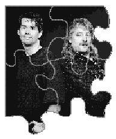

See if you can solve this programming puzzle, presented in the form of a dialog
between a pseudo KON (Ian Hendry) and BAL (Eric Anderson). The dialog gives clues to
help you. Keep guessing until you're done; your score is the number to the left of the
clue that gave you the correct answer. Even if you never run into the particular
problems being solved here, you'll learn some valuable debugging techniques that will
help you solve your own programming conundrums. And you'll also learn interesting
Macintosh trivia.
BAL I've got one for you, KON: I just updated to System 7.5 on my 8100/80 AV.
Everything seemed OK for a while. I was comparing Scenery Animator to Vistapro and I
noticed that my cool new desktop pattern had disappeared. It was there when I booted,
but just as the Finder was coming up, the desktop changed to a black-and-white
pattern.
KON That's easy. Go back to System 7.1 and the world will be fine again. Next.
BAL Hey, 7.5 is the source of much wonderment. It's really a lot of fun!
KON I don't know that much about 7.5. Metrowerks and THINK C seem to run fine on
7.1. Is this part of that new puzzle CDEV that was added to spruce up the system?
BAL Quit trying to change the subject. My desktop pattern went away and I'm not
happy about it.
KON Hmm. Did you change anything on your machine?
BAL I turned on VM for the memory-hungry rendering stuff.
KON So turn off VM and see if the problem goes away.
BAL Wow, that worked great. Now all I have to do is buy $1800 worth of
tariff-enhanced RAM so I can render my flyby of the Pentagon.
KON I won't ask what you're up to these days. My recent stock dealings have left me
low on bail money. Did you try it on 7.1.2?
BAL It didn't happen on straight 7.1.2, but I installed System Update 3.0 and it
happened. VM must have changed in this update.
KON Sounds like a VM problem all right. Paste the older VM resources into the new
system. (I love component software.)
BAL The problem is still there. Does this let VM off the hook?
KON VM is never off the hook, but if your only problem is that the desktop pattern is
black and white, maybe you should stop whining and do your work.
BAL No, this is more serious. I opened the Monitors control panel and there was no
depth list and no monitor tile in the rearrange section.
KON Well, this should be pretty straightforward. Does it happen every time?
BAL No such luck. This one is really evil. I've been trying to get a reproducible case
for days. Sometimes it happens right away, sometimes it goes away for hours. Once it
starts happening, it seems to keep happening across restarts. It doesn't happen as
reliably across shutdowns. It seems to happen more in millions of colors but will
happen at other depths too. Switching the display back and forth between a 13-inch and
a multiple-scan display sometimes causes the problem to show up. Changing VM and
RAM disk settings seems to affect the reproducibility.
KON Cool! The random bugs are always the most fun. Let's get our trusty MacsBug
and see if we can find where it's going bad. Look at the video driver and GDevice.
BAL When I try to enter MacsBug, the mouse freezes but MacsBug doesn't come up.
KON Dang, I hate it when the tools don't work.
BAL Perhaps we should devote this column to model rocketry and video games
instead.
KON Now there's a thought. If I type Command-G, does the mouse unfreeze, or do I
have to reboot?
BAL The machine comes back when you hit Command-G.
KON So MacsBug is there; you just can't see it. I'll use log foo to dump the output to a
file named foo, followed by
dm @@thegdevice gdevice
Then I'll use drvr to see if the video driver is alive.
BAL Nice log trick, KON! The GDevice is fine, and the driver looks as if it's loaded
and active.
KON Drivers and VM sometimes don't get along. Maybe the driver is doing something
wrong. Did you try other video cards?
BAL It seems to happen only on Power Macintosh AV models.
KON It's the nasty "fungus" problem from Issue 17 all over again, or maybe your
card has gone bad.
BAL Well, I'm pretty sure there was no "fungus" around when the AV card was
developed, so it's probably not that. Besides, we're sticking to production software in
this column from now on. Anyway, I thought it might be my card, too, so I borrowed
your card. Thanks for the loaner. I turned on VM and it worked like a champ . . . for a
while. Now I've got the same problem again.
KON You killed my card?
BAL Admittedly, it's a computer that can do anything. But for the purposes of this
column, that idea is pretty far-fetched.
KON Here's what might be happening: Early in the boot process, VM isn't present.
For each card, the system calls the card's PrimaryInit code and creates a GDevice.
When VM loads, it changes the logical address mappings. When the driver is called
again, it assumes a one-to-one logical-to-physical mapping of RAM, so the card starts
responding to bogus address cycles. This confuses the card's bus translator, and . . .
BAL Whatever. Any other stabs in the dark? Lose five points and try again.
KON OK. Perhaps there are subtle timing variations when VM is present, and the
video card might have borderline hardware that's affected by these timing
dependencies. Or maybe the card's controller gets into a state where it no longer
responds to its address space.
BAL You're getting desperate. It's not a hardware problem. The declaration ROM is
there and everything looks fine. You can't blame this on the hardware. Let's once again
follow the software decision tree.
KON Yeah, you're probably right. Now that I think about it, those ideas seem really
out there.
So what you're telling me is that the desktop pattern is black and white, MacsBug isn't
working, and the Monitors control panel doesn't show depths or a monitor tile. Let's
find out when MacsBug stops working.
BAL When the machine boots, MacsBug is working, but by the time you get to the
Finder, it's gone. It seems to vanish early in the boot process.
KON See if you get to the first Display Manager call with an atb DisplayDispatch or
atb ABEB.
BAL OK. MacsBug is still alive.
KON I'll set a breakpoint just after the first Display Manager call and then go.
BAL Yep. There doesn't seem to be a problem now. But the weird thing is, if you
trace over the Display Manager call and then type go, MacsBug will eventually go away.
KON Wacky. Sounds like a Display Manager bug.
BAL Earlier you said it was a VM bug.
KON Both have been convicted criminals in the past, so you can't blame me for
thinking they're suspects. I'll bet you a buck it turns out to be neither! Do an atb on
the Display Manager call and trace from there until MacsBug goes away; it shouldn't
take too long.
BAL Sorry, MacsBug never goes away. The problem isn't reproduced.
KON So what you're telling me is that if I trace over the Display Manager call and
then go, I can't get into MacsBug after I'm done booting. But if I keep tracing, the
machine boots fine and MacsBug is always available.
BAL That's right. Let me help you along a little bit. There's an SSecondaryInit call
(which runs SecondaryInit code for the video cards) just a few 680x0 instructions
after the first Display Manager call. Does that help at all?
KON What happens if we do an atb on SSecondaryInit?
BAL I can't reproduce the problem. If I set a breakpoint just after the Display
Manager call and go, the problem disappears. If I do an atb on the Display Manager call,
and either go from there or trace over it and go, the problem happens. If I trace over it
for a few instructions and go, the problem doesn't happen.
KON So, what are the "few" instructions? It looks like they're the ones whacking the
video driver.
BAL No, they're just a few MOVE instructions to innocuous RAM locations -- nothing
that should touch video.
KON What does this Display Manager call do? Could it be hosing anything in the
slots?
BAL I don't think so. I used MacsBug to skip it entirely and the problem still
happens.
KON This isn't getting us anywhere. Maybe the desktop pattern problem has some
better clues. The General Controls control panel in System 7.5 has an INIT resource
that calls HasDepth to decide whether to use the color pattern. It then sets a PRAM bit
to remember whether to use a color pattern across restarts. When the desktop pattern
is black and white, I'll use the log trick to find out what the HasDepth call is returning.
BAL It returns an error.
KON Aha! Since HasDepth returns an error, the INIT resource thinks it's on a
display that can support only one bit per pixel (black and white), so it disables the
color desktop pattern and resets the PRAM bit; the color desktop pattern is now gone
forever.
BAL OK.
KON Let's trace HasDepth and find out what's wrong.
BAL It looks as if the Slot Manager returns the correct values for the active
functional sResource of the card but fails to find the depth. It returns -316, an
smInitStatVErr. According to Errors.h, this error indicates that the siInitStatusV field
was "negative after primary or secondary init." This means the card's PrimaryInit or
SecondaryInit code returned an error.
KON We can bet it's not PrimaryInit, because the GDevice is good. If the error had
happened in PrimaryInit, QuickDraw would have gotten an smInitStatVErr when it
called the Slot Manager to build the GDevice.
BAL You're finally making some progress!
KON MacsBug also makes Slot Manager calls (when it tries to switch depths), which
explains why it fails. That means the problem must be with the SSecondaryInit call.
Once the Slot Manager gets this error, most Slot Manager calls return errors.
BAL But this doesn't explain what's causing the Slot Manager to fail to begin with, or
why the problem goes away every time we get close to it with MacsBug.
KON Maybe we should try this with a BootBug card. Can you still get one?
BAL Maybe, but we're doing pretty well here. Let's keep going a little longer.
KON Let's try to figure it out by brute logic. What does the SecondaryInit code look
like on this card?
BAL MOVE.L A0,A0.
KON That's it? Two bytes? No RTS? Cool! A bug in the AV card ROM! Does this mean
we all get new cards with the new 2.0 ROM? Maybe they can simplify that complicated
Monitors control panel Options dialog at the same time. How does it boot at all?
BAL Good question. Designing Cards and Drivers for the Macintosh Familysays that
the SecondaryInit entry on a video card is an SExecBlock, which is a header followed by
actual code. The Slot Manager validates the header before it executes the code. The first
byte of an SExecBlock is the revision number, and the Slot Manager checks for a
revision byte of 0x02. Since MOVE.L A0,A0 is 0x2048 in hex, the first byte of the AV
card's SecondaryInit entry is 0x20, which is a bogus entry, and the Slot Manager will
never try to execute the SecondaryInit code.
KON So it's pretty lame, but it should work, right?
BAL Yes. Remember, we added SecondaryInit to the boot process because some
machines didn't have 32-bit QuickDraw in ROM. On a machine without 32-bit
QuickDraw in ROM, video cards have to disable their functional sResources with direct
bit depths (16 and 32) in their PrimaryInit code, because the PrimaryInit code runs
before the disk is up and the cards can't tell if the system has 32-bit QuickDraw
installed. SecondaryInit was added to give these cards a chance to reenable those direct
depths after 32-bit QuickDraw was loaded from disk. Power Macs obviously have
32-bit QuickDraw in ROM, and this card only runs on a Power Mac, so it doesn't need
SecondaryInit.
KON Let's walk through the SSecondaryInit call and see what it does. Why does VM
make a difference? And why is MacsBug causing the problem to go away if you set
breakpoints?
BAL You're just full of questions, aren't you? You're supposed to be giving the
answers!
KON Let's walk through SSecondaryInit.
BAL For each card, it looks for a SecondaryInit entry in the card's ROM. The entry
contains a header followed by the SecondaryInit code. If there's no SecondaryInit entry
on the card, SSecondaryInit bails out early. If there is a SecondaryInit on the card, the
Slot Manager tries to execute it with SExec and then checks the status from the SExec
call. If the status is negative (an error), the Slot Manager marks the slot with that
evil -316 error, and the slot is bad from there on out.
KON So who is responsible for setting the error?
BAL The code executed by SExec, in this case the SecondaryInit code, should set the
status error. If the header is bad, the code never gets run and the status never gets set.
KON Let me guess: the boot code never initializes the status before calling SExec.
BAL Yep. And it's allocated on the stack as a local variable, which means that the
status is set to whatever garbage is left on the stack. At this point in the boot process
you're still in supervisor mode, so MacsBug is sharing your stack. When MacsBug is
used, it pushes stuff onto the stack and then pops it off when it leaves (changing the
garbage below the stack in the process). That's why setting breakpoints and tracing
mask the problem. BootBug also uses the stack, so it too would have interfered with the
bug.
Between the first Display Manager call and the SSecondaryInit, the system allocates
stack space for the SPBlock parameter for the SSecondaryInit call. After the SPBlock
is allocated, the stack pointer is very close to where the local variables for
SSecondaryInit will be allocated. At this point MacsBug's stack usage will affect those
never-initialized local variables.
This is something else to add to your list of gotchas for MacsBug: If you're in
supervisor mode (as you are at this point in the boot process) and you set breakpoints,
MacsBug is sharing your stack, and its use of the stack may affect uninitialized
variables. Later in the boot process, VM switches the machine to user mode; from then
on, MacsBug and applications use different stacks and MacsBug will not interfere with
uninitialized variables on the stack.
KON The garbage that VM leaves on the stack (sometimes) happens to be negative.
When the boot code gets to SecondaryInit and allocates variables on the stack, it
happens to use an area of the stack affected by VM.
BAL Well, I never turn VM on, so I'm always in supervisor mode, and MacsBug
always shares my stack. But now I've finally found a good use for VM: turn it on when I
have a bug that's hard to reproduce when MacsBug gets involved, and see if it becomes
reproducible.
KON That'll slow your machine down.
BAL Nasty.
KON Yeah.
SCORING
75-100 Excellent; you probably have a video-in jack built right into your head.
50-70 Maybe we should be working for you.
25-45 Maybe you should be working for us.
5-20 Maybe you should stick to television.*
Thanks to Rich Collyer, Kent Miller, Mike Puckett, John Yen, KON (Konstantin
Othmer), and BAL (Bruce Leak) for reviewing this column.*
IAN HENDRY (AppleLink HENDRY; Internet hendry@apple.com) gets paid by Apple to
work on video stuff. His hobbies include shipping products and collecting new
Engineering managers. He can be found skipping meetings to play Ultimate and working
all hours to make up for it. Ian's going to be a dad soon, and though he has been in
rigorous sleep-deprivation training for years, he's hoping (but still not certain) that
he's ready for what he's gotten himself into.*
ERIC ANDERSON (AppleLink ERIC3) skipped out on the OS Services group at Apple
to get away from the chore of working on VM and the Thread Manager. Now he works as
Ian's evil twin on video-related Mac OS issues -- and he gets bugs assigned to him that
state, "When using a multisync monitor with my threaded test app while VM is on, this
funny thing happens." Seeing that there's no escape, Eric wants more than ever to
move to Hawaii and build boats.*